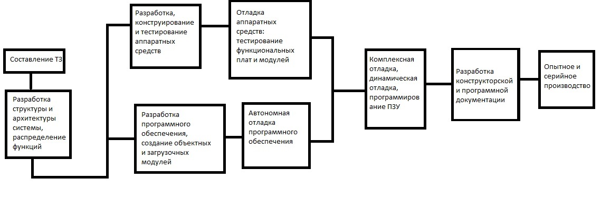

Отла́дка — этап разработки компьютерной программы, на котором обнаруживают, локализуют и устраняют ошибки. Чтобы понять, где возникла ошибка, приходится:
узнавать текущие значения переменных;
выяснять, по какому пути выполнялась программа.
Существуют две взаимодополняющие технологии отладки.
Использование отладчиков — программ, которые включают в себя пользовательский интерфейс для пошагового выполнения программы: оператор за оператором, функция за функцией, с остановками на некоторых строках исходного кода или при достижении определённого условия.
Вывод текущего состояния программы с помощью расположенных в критических точках программы операторов вывода — на экран, принтер, громкоговоритель или в файл. Вывод отладочных сведений в файл называется журналированием.
Место отладки в цикле разработки программы
Типичный цикл разработки, за время жизни программы многократно повторяющийся, выглядит примерно так:
- Программирование — внесение в программу новой функциональности, исправление существующих ошибок.
- Тестирование (ручное или автоматизированное; программистом, тестировщиком или пользователем; «дымовое», в режиме чёрного ящика или модульное…) — обнаружение факта ошибки.
- Воспроизведение ошибки — выяснение условий, при которых ошибка случается. Это может оказаться непростой задачей при программировании параллельных процессов и при некоторых необычных ошибках, известных как гейзенбаги.
- Отладка — обнаружение причины ошибки.
Инструменты
Способности программиста к отладке — это, по-видимому, важнейший фактор в обнаружении источника проблемы, но сложность отладки сильно зависит от используемого языка программирования и инструментов, в частности, отладчиков.
Инструменты отладки
Отладчик представляет из себя программный инструмент, позволяющий программисту наблюдать за выполнением исследуемой программы, останавливать и перезапускать её, прогонять в замедленном темпе, изменять значения в памяти и даже, в некоторых случаях, возвращать назад по времени.
Также полезными инструментами в руках программиста могут оказаться:
Профилировщики. Они позволят определить, сколько времени выполняется тот или иной участок кода. Анализ покрытия позволяет выявить неисполняемые участки кода
API логгеры позволяют отследить взаимодействие программы и Windows API при помощи записи сообщений Windows в лог.
Дизассемблеры позволяют посмотреть ассемблерный код исполняемого файла
Снифферы помогут отследить сетевой трафик, генерируемый программой
Снифферы аппаратных интерфейсов позволяют увидеть данные, которыми обмениваются система и устройство.
Логи системы.
Использование языков программирования высокого уровня обычно упрощает отладку, если такие языки содержат, например, средства обработки исключений, сильно облегчающие поиск источника проблемы. В низкоуровневых языках ошибки могут приводить к незаметным проблемам — например, повреждениям памяти и утечкам памяти. Тогда бывает довольно трудно определить, что стало первоначальной причиной ошибки. В этих случаях могут потребоваться сложные приёмы и средства отладки.
Инструменты, снижающие потребность в отладке
Другое направление — сделать, чтобы отладка нужна была как можно реже. Для этого применяются:
Контрактное программирование — чтобы программист подтверждал другим путём, что ему на выходе нужно именно такое поведение программы. В языках, в которых контрактного программирования нет, используется самопроверка программы в ключевых точках.
Модульное тестирование — проверка поведения программы по частям.
Статический анализ кода — проверка кода на стандартные ошибки «по недосмотру».
Высокая культура программирования, в частности, паттерны проектирования, соглашения об именовании и прозрачное поведение отдельных блоков кода — чтобы объявить себе и другим, каким образом должна вести себя та или иная функция.
Широкое использование проверенных внешних библиотек.
Необходимость отладки аппаратных и программных средств МПУ
Процесс создания МПУ и МПС характеризуется тесной взаимосвязью этапов разработки
аппаратного и программного обеспечения и сложностью отладки программ при ограниченном наборе
оборудования.
На первом этапе (этапе составления ТЗ) производится формализация требований к системе. При
этом определяются все внешние связи разрабатываемых микропроцессорных средств, перечисляются
функции системы, формализуется ТЗ на систему. На этом этапе возможны ошибки из-за
несогласованности требований к системе и неточностей алгоритмов функционирования МПУ.
На втором этапе производится разработка структуры и архитектуры системы, а также
распределение функций между аппаратурными и программными средствами. Выбираются
микропроцессорные наборы, на базе которых будет реализована система, определяются взаимодействия
между аппаратурными и программными средствами. На этом этапе ошибки в проекте могут быть из-за
несогласованности протокола взаимодействия аппаратуры и программ, неверного выбора
микропроцессорных наборов, неверной интерпретации технических требований и др.
На третьем этапе производится разработка и изготовление аппаратурных средств и
программного обеспечения системы. После определения функций, реализуемых аппаратурой, и
функций, реализуемых программами, схемотехники и программисты приступают к разработкам.
Проектирование аппаратных средств включает в себя разработку подробной логической схемы
каждого модуля, построение временных диаграмм управляющих сигналов, конструирование каждого
модуля на плате, тестирование схем путем прослеживания сигналов и сравнения их с логическими
схемами и временными диаграммами и сборку модулей в законченную систему, называемую
прототипом.
Разработка программ состоит из разработки алгоритмов, декомпозиции общей программы на подпрограммы, разработки структурной схемы каждого программного модуля, написания программ на языке ассемблера или языке высокого уровня, трансляции с помощью ассемблера или компилятора в объектные модули, создания загрузочных модулей и их автономной отладки, объединения модулей в законченный программный модуль и его отладки
Основные ошибки, возникающие на этом этапе, следующие. При разработке аппаратуры возможны упущения некоторых функций, недоработка в схемах синхронизации, нарушение правил проектирования, при разработке программных средств — упущения и неверная интерпретация отдельных функций, неточности в алгоритмах и кодировании.

Разработка аппаратных и программных средств МПУ производится параллельно, причем по мере
завершения проекта взаимодействие между группами разработчиков становится все более тесным. С
помощью кросс-систем, моделирующих программ и систем автоматизированного проектирования
можно отладить почти все программы. Однако системные моменты типа прерываний можно проверить
только на прототипе.
Окончательный этап проектирования -интеграция прототипа и программы. Прототип здесь еще
может иметь неисправности, поэтому на этом этапе производится комплексная отладка аппаратурных и
программных средств
Завершается процесс проектирования разработкой документации, опытным и серийным
производством.
Безопасность программного кода и отладка
В программном коде может быть так называемое недокументированное поведение — серьёзные ошибки, которые не проявляются при нормальном ходе выполнения программы, однако весьма опасны для безопасности всей системы в случае целенаправленной атаки. Чаще всего это результат ошибок программиста. Наиболее известные примеры — это SQL-инъекция и переполнение буфера. В данном случае задача отладки это:
Выявление недокументированного поведения системы
Устранение небезопасного кода
Выделяют такие методы:
статический анализ кода. На этой фазе программа сканер ищет последовательности в исходном тексте, соответствующие небезопасным вызовам функций и т. д. Фактически идет сканирование исходного текста программы на основе специальной базы правил, которая содержит описание небезопасных образцов кода.
фаззинг. Это процесс подачи на вход программы случайных или некорректных данных и анализ реакции программы.
Reverse engineering (Обратная инженерия). Этот случай возникает, когда независимые исследователи ищут уязвимости и недокументированные возможности программы.